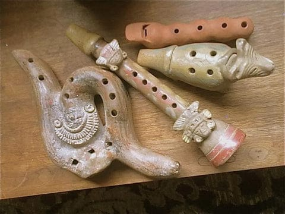
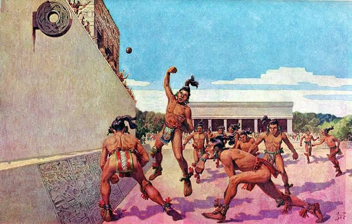

Historia
La cultura olmeca se desarrolló aproximadamente entre el 1200 a.C. y el 400 a.C. en la región del Golfo de México, principalmente en los actuales estados de Veracruz y Tabasco.

La cultura madre de Mesoamérica
La cultura olmeca se desarrolló aproximadamente entre el 1200 a.C. y el 400 a.C. en la región del Golfo de México, principalmente en los actuales estados de Veracruz y Tabasco.
La música olmeca se utilizaba en ceremonias religiosas y rituales. Empleaban instrumentos como tambores, flautas de barro y caracoles marinos.
Los olmecas practicaban una versión temprana del Juego de Pelota mesoamericano, utilizando una pelota de hule.
